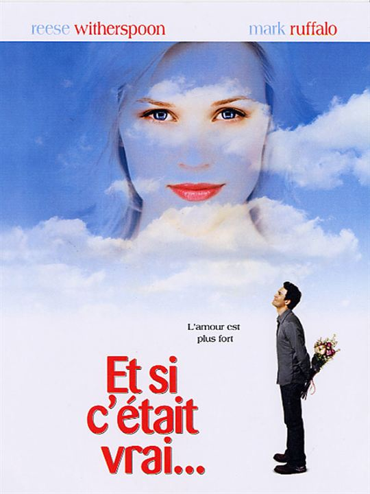

Et si c’était vrai… de Marc Levy
Et si c’était vrai…, c’est un roman dont on m’a parlé il y a bien des années.
Une amie adorait Marc Levy et lisait chacun de ses ouvrages dès sa sortie. Ça ne m’intéressait pas plus que ça parce que je n’aimais pas l’idée de lire un bouquin parce qu’il était LE livre incontournable du moment. Je préfère lire ce qui me plait, quand ça me plait.
Finalement, une dizaine d’années plus tard, ça me disait bien de mon plonger dans cette romance hors du commun que j’avais également eu l’occasion de découvrir en 2005 dans le film adapté du roman, avec Reese Witherspoon et Mark Ruffalo. Attention, si vous ne connaissez pas du tout l’histoire, passez votre chemin : spoilers.
L’histoire
Une jeune interne en médecine, Lauren, profite de son premier weekend de repos depuis des lustres pour partir chez des amis se ressourcer. Malheureusement, elle est victime d’un accident de voiture et tombe dans un coma profond.
Sa mère met son appartement en location. Un jeune architecte, Arthur, s’y installe et a le plaisir de découvrir Lauren dans sa salle de bain. Ou plutôt, l’« âme » de Lauren. Son corps est toujours piégé à l’hôpital, inutilisable, mais elle parvient à se balader comme bon lui semble, de manière dématérialisée. Elle va avoir du mal à convaincre Arthur de la véracité de son histoire, et lorsqu’enfin il se rendra à l’évidence, il fera tout pour l’aider à ne pas mourir, car il va s’attacher à elle.
Les personnages
Lauren et Arthur
Je trouve que, même après avoir lu tout un roman qui parle d’eux, on ne peut pas dire grand chose à leur sujet. Ils sont principalement caractérisés par leur profession, ce que je déteste.
On sait néanmoins que Lauren est têtue et Arthur plutôt sensible. On le comprend grâce à leurs interactions et aux souvenirs d’enfance d’Arthur.
Personnages secondaires
Le meilleur ami d’Arthur a du mal à le comprendre quand il le voit parler tout seul et enlever un corps à l’hôpital, mais il est toujours présent et prêt à donner un coup de main. Il s’agit d’un personnage secondaire, pourtant sa personnalité est assez marquée. Je l’aime bien. Il est très drôle et ses répliques apportent énormément de couleurs à l’histoire.
L’inspecteur chargé de retrouver le corps de Lauren après qu’Arthur l’a sortie de l’hôpital est quelqu’un de déterminé. Il sait ce qu’il fait et il ne lui faut pas longtemps pour trouver le coupable. Mais il a un grand cœur et il sait faire la part des choses. Il ne condamne pas les bonnes personnes (qui ont un bon fond, s’entend). Sans lui, l’histoire aurait vite tournée court.
Mon avis
Point positif
J’aime les romances et je trouve que c’est une belle histoire, même si ça paraît un peu étrange d’allier une sorte de fantôme avec un être bien vivant. Il fallait avoir l’idée.
Points négatifs
L’histoire est belle, oui, mais elle gagnerait à être écrite d’une meilleure manière.
Une grande distance avec le lecteur
Le point de vue narratif est étrange. On a l’impression de ne jamais se rapprocher des personnages. Leurs descriptions sont apportées avec une distance inexplicable, leurs échanges et leurs paroles sont survolés. Il y a énormément de discours indirects qui coupent les dialogues et nous éloignent des personnages. De ce fait, on ressent mal leurs sentiments, leurs impressions…
Finalement, l’histoire est assez dramatique du début à la fin. Pourtant, tout ce que fait et ce que ressent Arthur après la disparition de Lauren est rapidement énuméré, presque comme une liste de courses ! Le seul instant où l’on ressent vraiment sa peine et son désespoir, c’est quand il parle enfin à son ami. Mais ce n’est pas vraiment ce moment, c’est une réplique en particulier, prononcée directement par Arthur : « Elle est morte ».
Ça montre bien, à mon avis, que les dialogues sont très importants pour communiquer les sentiments des personnages (même s’ils ne sont pas les seuls instruments à utiliser pour ça), et c’est dommage que Marc Levy les ait autant tailladés dans cette histoire.
Une relation qui nous échappe
Puisque le narrateur nous présente l’histoire de trop loin, on ne comprend pas trop comment Lauren et Arthur en viennent à se rapprocher autant l’un de l’autre. Ça tombe un peu comme un cheveu sur la soupe ! Et une fois que la notion de relation intime est enfin ancrée dans notre esprit, on se demande comment c’est possible. Ça manque cruellement de descriptions ! Comment une âme errante peut-elle enlacer un corps humain vivant ? Et le contraire ? Comment Lauren et Arthur peuvent-ils se sentir l’un l’autre et ressentir du plaisir ? Que s’est-il passé ? Pourquoi est-ce qu’on ne peut pas savourer cette idée de douce romance sans se poser ces étranges questions ?
Tout simplement parce que l’auteur nous amène le concept sans nous le décrire. On sait que Lauren parvient, à un moment, à appuyer sur le bouton d’une télécommande, mais c’est tout. On ne sait pas ce qu’elle ressent, ce que ça lui fait, comment elle s’y est prise… Mais ça doit suffire à nous faire comprendre que si elle peut appuyer sur une télécommande, elle peut toucher Arthur.
No way ! Il faut nous en dire plus !
Une fin décevante
Vue la tournure que prend l’histoire, on se doute qu’à un moment ou un autre, tout va basculer. Lorsque Lauren disparaît et qu’Arthur la croit morte, on se dit : « Bon, au moins ils auront vécu une belle histoire tous les deux ». Mais dès que le téléphone sonne, on sait que ce n’est pas fini. Alors là, on espère, on trépigne. Et, alors qu’on est pressé de savoir ce qui va arriver, c’est le seul moment du livre où l’impression de survoler tout à toute vitesse disparaît. L’auteur prend bien son temps pour nous dénouer tout ça, il nous torture inutilement.
Ensuite, au premier froncement de sourcils de Lauren, on comprend enfin. Elle a oublié Arthur…
Bon… OK. Pourquoi pas ?
C’est vrai que le coma est quelque chose de mystérieux, que les médecins ne savent pas tout dessus. D’ailleurs, personne ne pouvait prévoir que l’âme de Lauren se baladerait et vivrait sa vie pendant que son corps dormirait tranquillement à l’hôpital. Oui, mais si son âme a vécu cette superbe relation avec Arthur, ne devrait-elle pas s’en rappeler ? Ne devrait-il pas subsister quelques traces ? Après tout, son corps et son âme sont réunis maintenant, son cerveau aurait pu assimiler tout ça, d’une manière totalement saugrenue, comme tout le reste.
Mais non.
C’est comme ça, c’est la volonté de l’auteur. Mais c’est un peu décevant.
Une fois qu’on est sûr que Lauren a oublié Arthur, celui-ci s’apprête à lui révéler ce qui est arrivé pendant son coma.
Oui ! C’est très bien ! C’est un bon moyen de rattraper la petite déception précédente.
Mais re-non ! C’est déjà la fin du livre ! On ne connaitra jamais la réaction de Lauren ! On ne saura pas si, une fois remise, son « âme » désirera encore ce garçon qui lui a pratiquement sauver la vie !
On veut savoir, bon sang !
La fin est trop rapide, elle est cruelle, inappropriée, inacceptable. Quel dommage !
Conclusion
Et si c’était vrai… est une magnifique histoire d’amour qui n’a, malheureusement, pas été traitée comme il fallait. Elle mériterait un bon remake, bien plus profond, qui travaillerait davantage sur la complexité qu’éprouvent les personnages à se rapprocher, à se toucher et à assouvir la passion qu’ils éprouvent l’un pour l’autre.
Le passé d’Arthur pourrait être plus développé. Après tout, il est important de le comprendre pour réaliser pourquoi il s’est autant attaché à Lauren et pourquoi il tient à tout prix à la sauver. On aimerait aussi savoir, mine de rien, s’il est le seul à voir l’âme de la jeune femme parce qu’il a appris à observer et à ressentir les choses ou s’il y a quelque chose d’autre, de plus mystérieux et mystique, comme le destin… Arthur ne s’est pas retrouvé dans cet appartement où rodait une âme par hasard. L’histoire manque de quelque chose…
Si vous voulez néanmoins la découvrir, penchez-vous plutôt sur le film, qui sera plus agréable et plus divertissant.